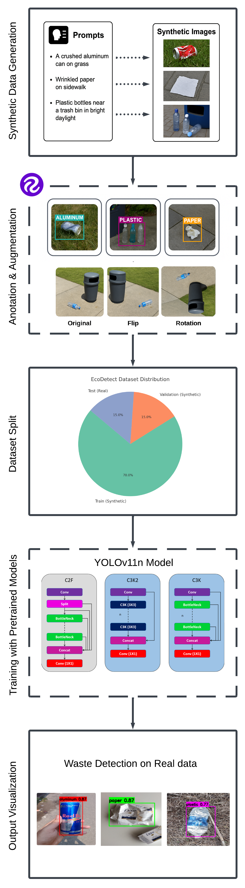
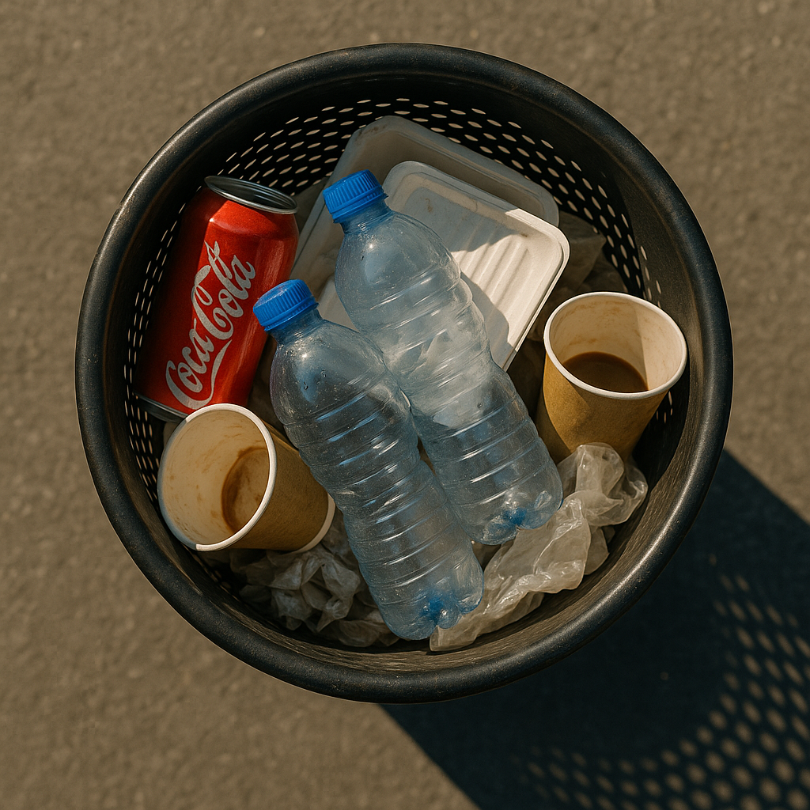
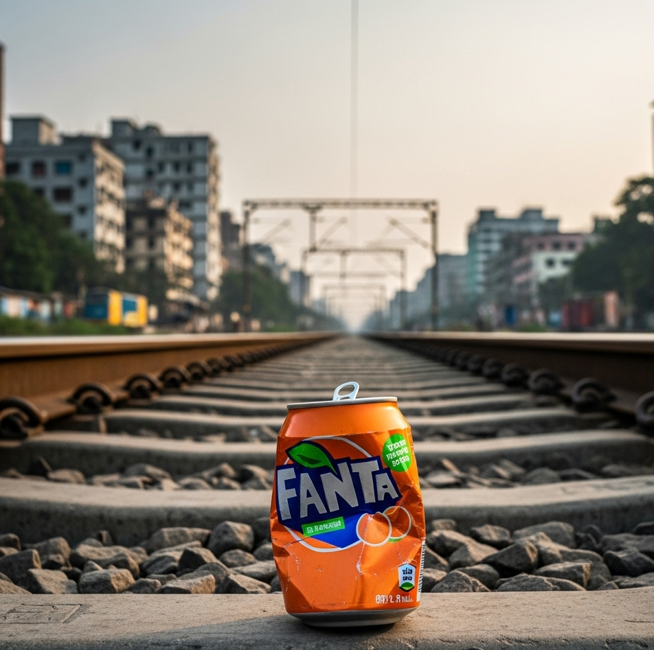
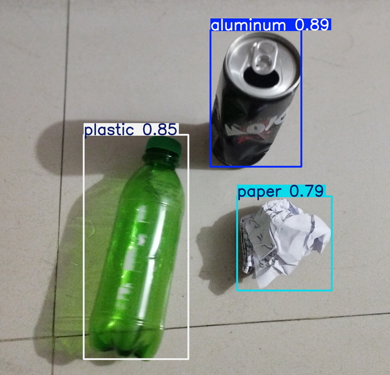

ICCIT 2025 · 28th International Conference on Computer and Information Technology · Cox's Bazar, Bangladesh · December 19–21, 2025
Department of Computer Science and Engineering, United International University, Dhaka, Bangladesh
The improper disposal of recyclable waste creates numerous issues for urban waste management systems and significantly harms the environment. Manual sorting is often ineffective, inconsistent, and economically unfeasible, especially in areas with limited resources.
In this study, we present EcoDetect, a lightweight, real-time recyclable waste detection system optimized for edge deployment. To address the shortage of labeled training data, the proposed approach combines prompt-based synthetic data generation with Roboflow-assisted annotation and augmentation. A YOLOv11n-based object detection model is trained to detect three waste categories: plastic, paper, and aluminum.
Evaluation on a completely unseen real-world test set demonstrates superior generalization from synthetic to real domains, achieving a precision of 78.9%, recall of 76.5%, and mAP@0.5 of 81.1%. By completely eliminating the need for manual data collection while maintaining high accuracy, EcoDetect delivers a scalable, low-latency solution optimized for real-world deployment and efficient edge operation.
EcoDetect adopts a synthetic-first strategy. Large language models generate diverse, structured prompts that feed text-to-image models, producing realistic training images without any manual data collection. These are annotated and augmented via Roboflow, then used to fine-tune a pretrained YOLOv11n model. The final model is evaluated exclusively on held-out real-world images.

Fig. 1. Overview of the EcoDetect pipeline: LLM prompt generation → synthetic image generation → annotation & augmentation → YOLOv11n fine-tuning → real-world evaluation.
A total of 415 high-resolution synthetic images were generated using structured LLM prompts. Prompts described diverse settings (parks, offices, sidewalks), lighting conditions, object positions, and background clutter to ensure class coverage and scene variety.


Fig. 2. Example synthetic images generated using LLM-guided prompt engineering, showing plastic, paper, and aluminum waste in varied real-world scenes.
Evaluated on 75 real-world images (354 annotated instances) held out entirely from training. Three independent seeds confirm robustness: averaged mAP@0.5 of 0.799 ± 0.008.
| Class | Precision | Recall | mAP@0.5 | mAP@0.5:0.95 |
|---|---|---|---|---|
| Aluminum | 0.799 | 0.824 | 0.829 | 0.622 |
| Paper | 0.782 | 0.629 | 0.734 | 0.573 |
| Plastic | 0.785 | 0.840 | 0.871 | 0.677 |
| Average | 0.789 | 0.765 | 0.811 | 0.624 |

Fig. 3. Inference on a held-out real-world image. Bounding boxes with class labels and confidence scores are shown for plastic, aluminum, and paper.
EcoDetect is the only model combining synthetic-only training with edge-ready architecture at competitive accuracy, while using 90% fewer computations than YOLOv8-CBAM.
| Model | Params (M) | GFLOPs | mAP@0.5 | Synth. Only | Edge Ready |
|---|---|---|---|---|---|
| YOLOv8-CBAM | 25.3 | 15.8 | 0.78 | ✗ | ✗ |
| YOLO EC | 12.1 | 8.6 | 0.74 | ✗ | ✓ |
| MRS-YOLO | 10.6 | 6.9 | 0.77 | ✗ | ✓ |
| YOLOv11x | 68.2 | 126.7 | 0.82 | ✓ | ✓ |
| EcoDetect (ours) | 2.59 | 6.4 | 0.81 | ✓ | ✓ |
@INPROCEEDINGS{11491266,
author = {Farabi, Ahsan and Minhaz, Md. Abdul Ahad and
Khandaker, Israt and Shanto, Ibrahim Khalil and
Raihan, Md. Tanvir},
booktitle = {2025 28th International Conference on Computer
and Information Technology (ICCIT)},
title = {EcoDetect: Lightweight Real-Time Recyclable Waste
Detection Using YOLOv11n Trained on
LLM-Guided Synthetic Data},
year = {2025},
pages = {66--71},
doi = {10.1109/ICCIT68739.2025.11491266}
}